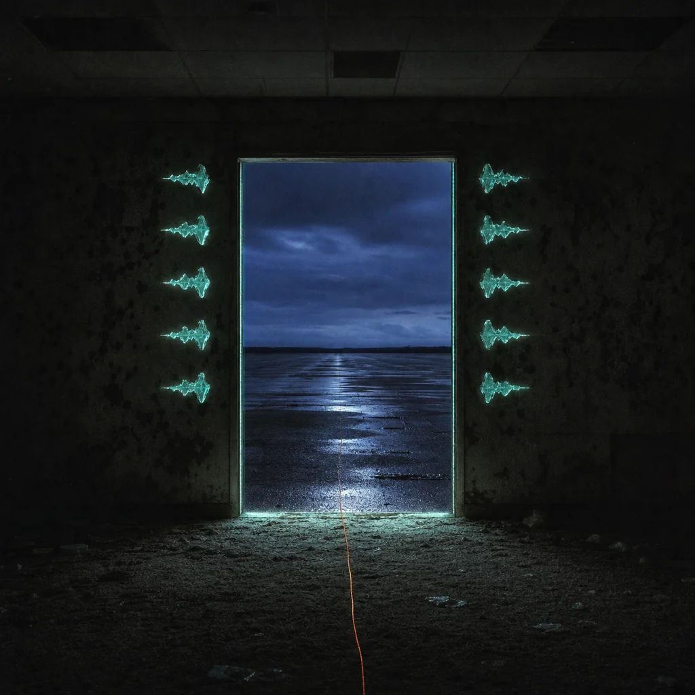

The Door That Listens

The ten echoes do not form a sentence. They form a witness. Yellow carpet, copied voice, hunted body, buried key, institutional ward, clockless landing, observation slit, receipt vault, terminal carrier, and oath all speak at once—and the maze loses the ability to call you imaginary.
A doorway opens without cutting the wall. Beyond it is not daylight. It is a cold night sky, wet pavement, and the sound of one ordinary car passing somewhere far away. The kind of sound that proves a world can continue without performing for you.
FOXPRINT // COHERENT
You did not solve the Backrooms. You made enough of yourself legible that it could no longer keep you. The fox at the threshold turns its head once. Not approval. Recognition.